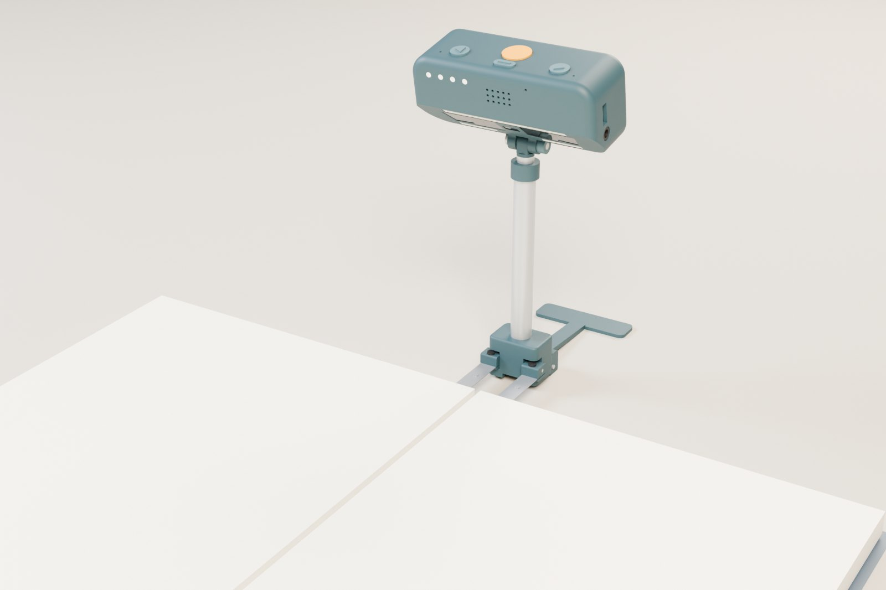
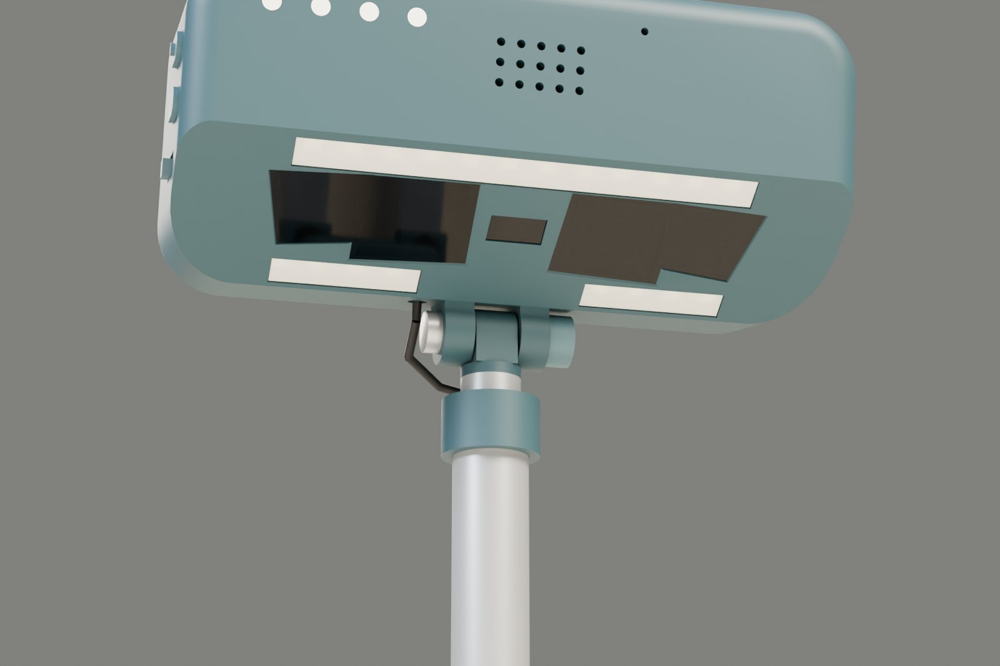
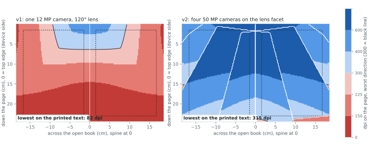
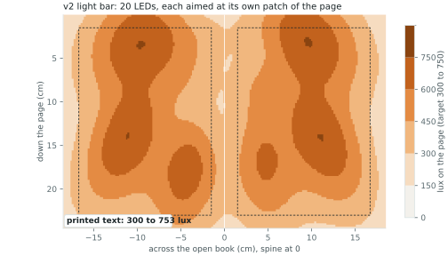
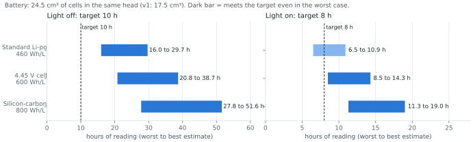
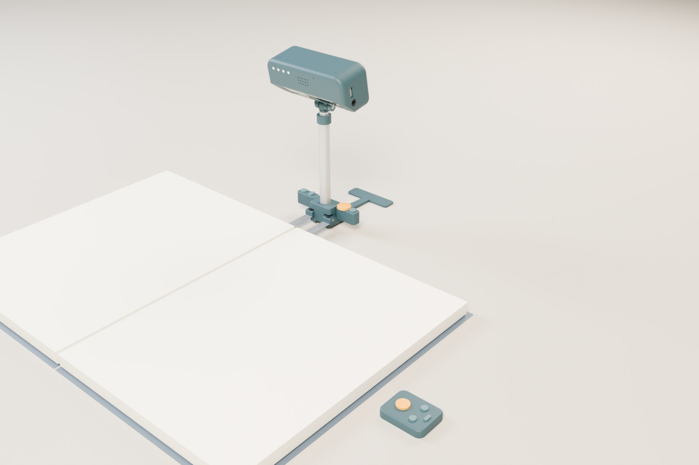
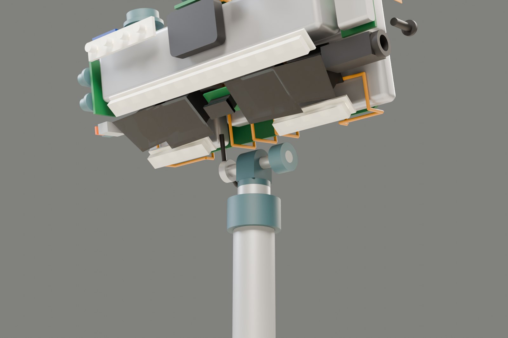
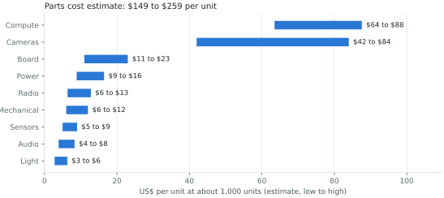

SenseBook hardware v2: what changes in the device
The same clip-on head at the top edge of the book, the same size, with new insides: four cameras that read every printed line at 300 dpi or more, a light that lights only the page, a bigger battery, a stronger computer, better radio and better sound. Two button layouts: A keeps v1's buttons, B moves them to the hub and adds a pocket clicker.
Status: design proposal. Nothing here has been built or measured. Numbers come from the 3D model (built on the build chat's v1 model, commit 598d0f3) and from datasheets and listings checked on 27 Nov 2026. EST marks our own estimates.


1 · Reading the pageFour 50 MP cameras: every printed line at 315 dpi or more
v1: one 12 MP camera with a 120° lens looks down from the top edge. Because it looks at a slant, the far end of the page gets few pixels: the lowest point on the printed text gets about 82 dpi. Text recognition tools usually ask for about 300 dpi for small print.
v2: the camera stays at the top edge, as you asked. Instead of one camera for the whole spread, four sit in a row on the same sloped facet, each with a 50 MP phone sensor (8160 × 6144 px). Two page cameras with about 60° lenses look across the book and reach the far end of each page, where the slant is worst. Two wide cameras (about 108°) cover the area right under the device that the page cameras cannot see. Almost every point (99.9%) is seen by two to four cameras, and the software uses whichever has the most pixels there. The lowest point on the printed text now gets 315 dpi (301 dpi even using only the two cameras on that page's side), counting the slight barrel distortion of real lenses (2% at the corner for the page cameras, 10% for the wide ones, EST). The whole page, margins included, is seen (157 dpi at the worst margin corner).
Why 60° and not the stock 64° lens: with 64° the far text corners came out at about 298 dpi once lens distortion was counted. A slightly longer lens (about 4.5 mm instead of 4.15 mm, same sensor and module) gives 315.

| Camera | View (horizontal × vertical) | Lowest dpi where it is the best camera |
|---|---|---|
| Wide camera, left | 108° × 92° | 331 |
| Wide camera, right | 108° × 92° | 331 |
| Page camera, left | 60° × 47° | 315 |
| Page camera, right | 60° × 47° | 315 |
- No recording. The cameras are off. A small hand sensor (ST VL53L8CX) sees a hand or a page turning; then the four cameras take one still each and turn off again.
- Aim. The page cameras look 47° down and 7° outward; the wide cameras 56° down and 2° outward. The model searched every aim in 1° steps and kept each module within 9.6° of the facet, so all four fit flat behind it.
- Snapshots for later: the hardware can keep text from pages (not pictures) on the device. How many, and when the assistant deletes them, is a software setting.
2 · LightA light bar that lights the page, not the room
v1: a ring of LEDs around the lens lights a circle. To get the far corners of the page bright enough, the middle gets far too bright, and much of the light misses the book. In our model the ring needs about 5.7 W to put 300 lux on every point of the printed text, and the middle of the page then gets over 9,000 lux (EST).
v2: two thin strips on the facet hold 20 small warm-white LEDs (CRI 90). A moulded optic aims each LED at its own patch of the page, and a 24-channel driver (TI LP5024) sets each one. The model finds the least power that puts 300 to 750 lux on every point of the printed text: about 71 lumens, 0.59 W from the battery (EST). It follows the book: the cameras see where the page ends, and LEDs aimed off the page stay off, so a small paperback uses less light than a big atlas.

3 · Battery24.5 cm³ of cells in the same head
The Pi Zero, its camera board and the separate audio and power boards took most of the head. v2 has one main board on v1's mounting points, so cells fill the space around the cameras: stepped cells behind and above them and a new cell in the front, 24.5 cm³ in all, against 17.5 cm³ in v1. The head stays 88 × 40 × 34 mm.
The power plan: the main chip sleeps between page turns. A small Bluetooth audio chip keeps reading aloud while it sleeps. Average draw with the light off: 0.35 to 0.65 W. The light adds 0.60 to 0.95 W. All EST.

| Cell type | Wh | Light off | 10 h met? | Light on | 8 h met? |
|---|---|---|---|---|---|
| Standard Li-po (460 Wh/L) | 11.3 | 16.0 to 29.7 h | yes, even in the worst case | 6.5 to 10.9 h | only in the better cases |
| 4.45 V cell (600 Wh/L, EST) | 14.7 | 20.8 to 38.7 h | yes, even in the worst case | 8.5 to 14.3 h | yes, even in the worst case |
| Silicon-carbon cell (800 Wh/L, phone grade) | 19.6 | 27.8 to 51.6 h | yes, even in the worst case | 11.3 to 19.0 h | yes, even in the worst case |
What this means: standard Li-po cells give 10 hours with the light off but not 8 hours with it on. 4.45 V cells give 8.5 to 14.3 h with the light on. These are custom stepped pouch cells; nobody has quoted them yet.
4 · Computer and radioRockchip RK3576 with an AI engine, Wi-Fi 6 and Bluetooth 5.4
- Computer: Rockchip RK3576, 8 cores, 6 TOPS NPU (an on-chip AI engine for reading text and making speech), 2 GB LPDDR4X, 16 GB eMMC. v1's Pi Zero 2 W has 4 slower cores, 512 MB and no AI engine. The board keeps the Pi Zero's outline and screw holes, so v1's cover and standoffs fit.
- Radio: Wi-Fi 6 + Bluetooth 5.4 module (Quectel FCS96x class, 12 × 12 mm) with a flex antenna on the inside of the right wall, away from the steel stick. v1: 2.4 GHz Wi-Fi 4 and Bluetooth 4.2.
- Untested: taking full 50 MP stills on the RK3576. Its image processor handles 16 MP, so full resolution means capturing raw frames and processing them on the chip. No one was found doing this on the RK3576.
5 · SoundA sealed speaker and a smart amplifier
- v1: an open 20 × 14 mm micro speaker. v2: a sealed 15 × 11 mm box speaker (Soberton 1511 class, 90 dB at 0.6 W and 10 cm) behind a new grille on the front, driven by a smart amplifier (TI TAS2563) that protects the speaker while running it loud. About 88–90 dB at 10 cm, EST.
- A third microphone on the front, so the device can cancel its own voice and hear the reader while it speaks (echo cancelling in software).
- v1's headphone jack, volume keys and mute switch stay where they are.
6 · ButtonsOption A keeps v1's buttons. Option B is the alternative.
Option A (v1 layout, unchanged): Ask, Play/Pause, Back and Forward on top of the head, volume and mute on the side.
Option B: the main keys sit on two wings of the hub at the top edge of the book. The book takes the push, so the head does not sway. A pocket clicker (Bluetooth, 36 × 28 × 9 mm, EST) does the same from the hand, in bed or on a bus. The top openings are closed.


7 · Cost$149 to $259 in parts per unit (EST)
The venture plan's v1 parts cost is $52.30 at 1,000 units. v2 costs more, mostly because of memory (its price rose sharply in 2026) and the four cameras. To keep it down, v2 uses 2 GB of memory instead of 4 GB, 16 GB of storage instead of 32 GB, echo cancelling in software instead of a $12–18 voice chip, catalogue phone camera modules with no custom optics, and v1's shell, stick, hub and blades unchanged.

All 25 lines with sources
| Block | Part | Qty | Cost | Basis | Source or note |
|---|---|---|---|---|---|
| Compute | Rockchip RK3576 SoC, 6 TOPS NPU, FCCSP 16.1 x 17.2 mm | 1 | $20.00–24.60 | Listed | LCSC C42388007: US$22.76 (30+) to 24.57 (1); LCKFB TaishanPi-3M BOM 9 Feb 2026: 141.25 CNY (about US$20) at 1,170 units |
| Compute | LPDDR4X, 2 GB | 1 | $22.00–35.00 | EST | No 2026 quote found. 4 GB estimated US$45-65 after the 2026 memory price rises (TrendForce; Raspberry Pi price notes); 2 GB taken as roughly half |
| Compute | eMMC, 16 GB | 1 | $20.00–25.00 | Listed | DRAMeXchange spot 16 June 2026: 16 GB average US$24.21 |
| Compute | Power management IC (RK806 class) | 1 | $1.50–3.00 | EST | No price found |
| Radio | Wi-Fi 6 + Bluetooth 5.4 module (Quectel FCS96x class, 12 x 12 mm) | 1 | $6.07–12.00 | Listed (low end) | Quectel FCS962N-LP US$6.07 at 1k+ (Future Electronics); FCS960K price not found |
| Radio | Flex antenna | 1 | $0.30–0.80 | EST | No price found |
| Cameras | 50 MP AF camera module (Samsung S5KJN1 class) with a ~4.5 mm, ~60 deg lens, page pair | 2 | $18.00–34.00 | Listed (unverified) | Alibaba asking prices GBP 7-13 per piece for 48-50 MP AF MIPI modules (decimal point unclear in the listing text); the listed module has a 4.15 mm lens, so the ~4.5 mm lens is a catalogue choice still to confirm |
| Cameras | 50 MP ultra-wide camera module, ~108 deg, near pair | 2 | $24.00–50.00 | EST | No ultra-wide 50 MP listing found; taken as dearer than the standard module |
| Sensors | ToF hand and page sensor, ST VL53L8CX | 1 | $4.00–7.00 | EST | No price found |
| Sensors | 6-axis motion sensor, ST LSM6DSV class | 1 | $1.00–2.00 | EST | No price found |
| Light | Mid-power LED, CRI 90, 2016 package | 20 | $0.80–2.00 | EST | No price found |
| Light | LED driver, TI LP5024 (24 channels) | 1 | $1.00–1.80 | EST | No price found |
| Light | Light-bar boards (3) and moulded optic strips (3) | 1 | $1.00–2.50 | EST | Optic mould tooling is a one-off cost, not included |
| Audio | Sealed box speaker, 15 x 11 mm (Soberton 1511 class) | 1 | $0.80–1.80 | EST | Listed on DigiKey; price not captured |
| Audio | Smart speaker amplifier, TI TAS2563 | 1 | $1.20–2.20 | EST | No price found |
| Audio | MEMS microphone | 3 | $0.90–1.80 | EST | No price found |
| Audio | Low-power Bluetooth audio chip (plays while the main chip sleeps) | 1 | $1.00–2.50 | EST | No price found |
| Power | Charger with power path, TI BQ25895 | 1 | $1.55–2.45 | Listed | LCSC C2861263: US$2.45 (1), 1.55 (1000+) |
| Power | USB-C PD sink controller | 1 | $0.80–2.00 | EST | No price found |
| Power | Fuel gauge, ADI MAX17260 | 1 | $1.54–2.00 | Listed (low end) | ADI list price from US$1.54 at 1k |
| Power | Stepped pouch cells, 1 cell in 3 parallel packs, generic Li-po | 1 | $5.00–10.00 | EST | No quote. 4.45 V or silicon-carbon cells cost more (no price found). Cell certification US$5-15k one-off (Alibaba seller guide 2026) |
| Board | Main board, 65 x 30 mm, 8-layer HDI | 1 | $4.00–9.00 | EST | No quote |
| Board | Assembly (two-sided, BGA) and test | 1 | $5.00–10.00 | EST | No quote |
| Board | Flex cables (6) and small boards (USB, ToF, top) | 1 | $2.00–4.00 | EST | No quote |
| Mechanical | Shell, cover, stick, hub, blades, rear leg, keys, screws, heat spreader (v1 parts, unchanged) | 1 | $6.00–12.00 | EST | Injection-mould tooling is a one-off cost, not included |
8 · ChecksWhat the model was checked for
| Check | Option A | Option B |
|---|---|---|
| Parts overlapping each other (more than 0.02 mm³) | 0 | 0 |
| Overlaps in every v1 pose (stick lengths, tilt, blade and leg positions) | 0 | 0 |
| Camera sight lines blocked by a part (rays to every page point each camera reads) | 0 of 3626 | 0 of 3626 |
| Everything in the head, bounding box (mm), buttons and hinge included | 89.2 × 34.0 × 53.5 | 89.2 × 34.0 × 52.1 |
| Same, v1 parts (for comparison) | 89.2 × 34.0 × 53.5 | |
| Front shell bounding box (mm) | 88.0 × 30.0 × 48.3 | v1: 88.0 × 30.0 × 48.3 |
| Mass, whole device without the book (g) | 160.2 | 166.1 (clicker not included) |
| Mass of the head (g) | 109.0 | 106.2 (v1: 108.8) |
Also checked by the model: every camera's window lets its full view through; the four cameras together see the whole page. Not checked: heat, drop strength, radio range, sound level, real camera blur and focus. These need a prototype.
9 · Not yet knownWhat a prototype has to show
- Full 50 MP stills from four cameras on the RK3576 (see section 4).
- Camera module sizes: taken from typical phone modules; no supplier drawing yet. The ~4.5 mm lens for the page cameras is a catalogue choice still to confirm with a module maker.
- Cell prices and density for small custom 4.45 V and silicon-carbon cells: no quote yet.
- The power figures, the light's real efficiency and the speaker's loudness: estimates until measured.
- Prices marked EST in the cost table.